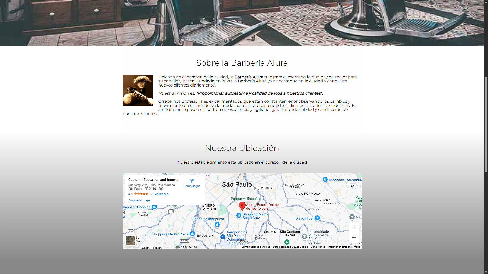

Acerca de mí
Hola, soy Gustavo Salmeron Ruiz, un Desarrollador Full-Stack con experiencia en desarrollo web. Me encanta aprender cosas nuevas y enfrentar desafíos. Siempre estoy buscando mejorar mis habilidades y aprender nuevas tecnologías. Actualmente, curso la Ingeniería en Desarrollo de Software en la Universidad Virtual del Estado de Guanajuato.
Proyectos Destacados
Barberia Alura
La pagina web "Barberia Alura" es un proyecto academico desarrollado durante mi estancia en el programa Oracle Next Education, para la elaboración del proyecto se utilizó únicamente HTML y CSS.
 Código en GitHubMictlan
Plataforma de e-commerce desarrollada durante mi estancia en el Bootcamp de Genetation MX para un bar ubicado en Tecamachalco, Puebla. Frontend con HTML, CSS, JavaScript y Bootstrap. Backend con Java, Spring Boot y MySQL.
 Código en GitHub
Código en GitHub
Encriptador de texto
El encriptador de texto es un proyecto academico desarrollado durante mi estancia en el programa Oracle Next Education, para la elaboración del proyecto se utilizó HTML, CSS y JavaScript.
 Código en GitHub
Código en GitHub
Habilidades
- HTML
- CSS
- JavaScript
- Java
- Bootstrap
- Spring Boot
- MySQL
- Git/GitHub
Educación y Certificaciones
- UVEG - Ingeniería en Desarrollo de Software - 2024 - Presente
- Oracle + Alura - Oracle Next Education F2 T6 Back-end - 2024
- Google - Google Cloud Computing Foundations - 2025
- Generation MX - Bootcamp Java Full-Stack - 2025
- Fundaula - Fundamentos de Java - 2025